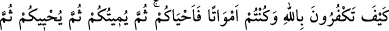
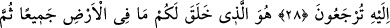
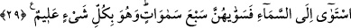

NASIL İNKÂR EDİYORSUNUZ?
28. Ey kâfirler! Siz ölü iken sizi dirilten (dünyâya getirip hayat veren) Allah’ı nasıl
inkâr ediyorsunuz? Sonra sizi öldürecek, tekrar sizi diriltecek ve sonunda O’na
döndürüleceksiniz.
29. O, yerde ne varsa hepsini sizin için yarattı. Sonra (kendine has bir şekilde)
semâya yöneldi, onu yedi kat olarak yaratıp düzenledi (tanzim etti). O, her şeyi
hakkıyla bilendir.
Sizi küfürden îmâna döndürecek enfüsî ve âfâkî deliller mevcûd olduğu halde, siz
Allah’ın birliğini nasıl inkâr edersiniz? Allah Teâlâ böyle bir şeyin olmasını uygun
bulmamakta ve “Siz bunların Allah’ı inkâr etmelerine şaşırmıyor musunuz?” buyurarak
kullarını bu tür davranışlara hayrete çağırmaktadır. Tefsîr-i Ebu’l-Leys’te bu açıklama
vardır.
Kadı Beyzâvî âyetin mânâsı hakkında der ki: “Nasıl?” sorusu, haber almak içindir.
Yâni, “Neye dayanarak Allah’ı inkâr ettiğinizi bana haber verin.” Siz daha önce
hayatsız cisimler idiniz. Toprak, hava ve suyun içerisinde dağınık unsurlar hâlinde iken
daha sonra sıra ile gıdâ, babanızın sulbünde nutfe ve ana rahminde yaratılışı belli
belirsiz bir çiğnem et parçası oldunuz.
Keşşâf’ta denilmiştir ki: Daha önce cansız varlıklar oldukları halde onlara “ölüler”
nasıl denmiştir? Halbuki “ölü” ancak hayâtiyeti olup sonra bu hayâtiyeti kaybeden
nesneye denilir, dersen derim ki: Bilakis canlılığı ve hayatı olmayanlar için bu kelime
kullanılır. Nitekim âyet-i celîlede “ölü bir ülke” (el-Furkan, 25/49) ifâdesi
geçmektedir. Sonra Allah, ruhlarını yarattı. Annelerinizin rahimlerinde bulunurken size
rûh üfledi. Dünyâya getirip orada sizi yaşattı. Bütün bunlar öldükten sonra tekrar
dirilmenin var olduğunu gösteren işâretlerdir. Ecelleriniz bitince sizin canınızı alacaktır.
Ölümün, Allah’ın kudretinin delillerinden olduğu açıktır. Bunun bir nimet oluşu ise
ebedî hayata ulaşmak için bir vesîle olması yönündendir.
“Sonra sizi tekrar diriltecektir.” Ölü kabre konunca kendisine sual sorulmak üzere
diriltilir. Hatta kabrinin başından dönüp gidenlerin ayak seslerini duyar. Sonra
kendisine “Rabbin kim?”, “Peygamberin kim?”, “Dînin ne?” şeklinde sualler sorulur.
Burada söz konusu olan diriltme, “ba’s” diye isimlendirilen kıyâmet günü vuku bulacak
dirilme değildir. Çünkü o gün dirildikten sonra hesap ve cezâ için Allah’a dönülecektir.